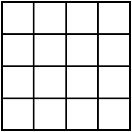
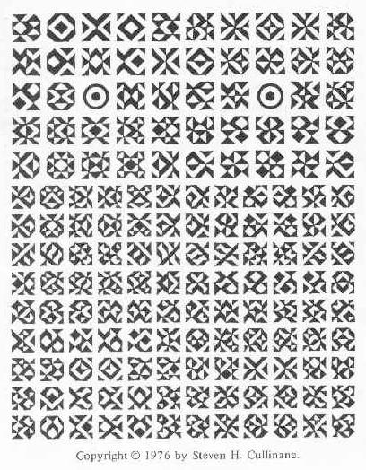

|
Finite Geometry Notes
|
Poetry's Bones:
"The Form, the Pattern" of Four Quartets
by Steven H. Cullinane
T. S. Eliot has advocated a rather impersonal approach to poetry.
In a 1922 essay, "Tradition and the Individual Talent," Eliot offered the following notes toward a definition of poetry:
"...the historical sense compels a man to write not merely with his own generation in his bones, but with a feeling that the whole of the literature of Europe from Homer and within it the whole of the literature of his own country has a simultaneous existence and composes a simultaneous order. This historical sense, which is a sense of the timeless as well as of the temporal and of the timeless and of the temporal together, is what makes a writer traditional. And it is at the same time what makes a writer most acutely conscious of his place in time, of his contemporaneity....
Some one said: 'The dead writers are remote from us because we know so much more than they did.' Precisely, and they are that which we know....
The progress of an artist is a continual self-sacrifice, a continual extinction of personality.... It is in this depersonalization that art may be said to approach the condition of science....
Poetry is not a turning loose of emotion, but an escape from emotion; it is not the expression of personality, but an escape from personality. But, of course, only those who have personality and emotions know what it means to want to escape from these things....
The emotion of art is impersonal. And the poet cannot reach this impersonality without surrendering himself wholly to the work to be done. And he is not likely to know what is to be done unless he lives in what is not merely the present, but the present moment of the past, unless he is conscious, not of what is dead, but of what is already living."
The following are some notes on poetry and visual art that may serve to exemplify Eliot's remarks above and also Pater's famous remark that
"All art aspires to the condition of music."
(Walter Pater, "The School of Giorgione," in October's Fortnightly Review (1877), and in Pater's The Renaissance: Studies in Art and Poetry (2nd edition) (1877))
Four Quartets and Four
Quartets:
Counterpoint in Poetry and Art
"...the sort of organization that Eliot later called musical, in his lecture 'The Music of Poetry,' delivered in 1942, just as he was completing Four Quartets: 'The use of recurrent themes is as natural to poetry as to music,' Eliot says:
There are possibilities for verse which bear some analogy to the development of a theme by different groups of instruments ['different voices,' we might say]; there are possibilities of transitions in a poem comparable to the different movements of a symphony or a quartet; there are possibilities of contrapuntal arrangement of subject-matter."
-- Louis L. Martz, from
"
Origins of Form in
Four Quartets,"
in Words in Time: New Essays on
Eliot’s Four Quartets,
ed. Edward Lobb, University of Michigan Press,
1993
"... Only by the form, the
pattern,
Can words or music reach
The
stillness...."
-- T. S. Eliot,
Four Quartets

Four Quartets
For a discussion of the above
form, or pattern,
click here.
In reading that discussion, "Diamond Theory,"
keep in mind
the following diagram of
Aristotle's four stoicheia (elements).
The diagram is also related to Four Quartets
by
Eliot's use of the four elements —
air, earth, water, fire —
as a unifying
theme for the four sections of his poem.
This structure is elementary, then, in at least two
senses
other than than the usual sense of simplicity.
That the apparent
simplicity of the diagram itself
is only apparent is shown by the
picture below.
This picture, done by the author in 1976, illustrates
Eliot's
"possibilities of contrapuntal arrangement."

Each of the small figures is what mathematicians call
a
"Latin square." The picture illustrates all 4x4 Latin squares
that can
be made with four triangular half-squares.
Close examination will reveal
certain contrapuntal arrangements.
Related reading:
Wallace Stevens,
The Relations between Poetry
and Painting
S. H. Cullinane,
The Grid of Time
and
Theme and Variations